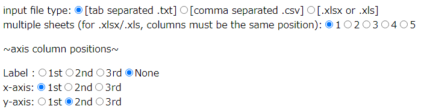

Plotのページの使い方
Plotのページは30分放置するとサーバーが寝るのでリンクをクリックしてすぐに表示されない
ときは気長に待ってみてください、サーバー起動中だと思うので。
アップロードできるものは
・タブで区切られた.txtファイル
・カンマ(,)で区切られた.csvファイル
・excelシート(.xlsx/.xls)
適当なところに改行があってもok、でもタブやカンマは無駄に存在するとエラーになる。
また、excelシートは必ず左上の隅からデータが始まっている必要がある。(A1セルからってこと)
それぞれのファイルイメージ
.txtファイル
.csvファイル
.xlsx/.xlsファイル
データは数字のみ可能です(ラベルは英数字)。
カラム名（データの項目名, ヘッダーのこと）は削除してください。
データに空白(欠損値)があるとプロットしません。
ドラッグアンドドロップか、クリックしてエクスプローラーから選択して
アップロード。一気に複数のファイルをアップすることは想定していません。
ファイルサイズの上限は大体750KBに設定してる。
アップロードされたデータは一時的にサーバーに保存されるが、
次のファイルがアップされたらそれに上書きされて無くなるようになってる。
~~~オプション~~~

input file type: 選んでください
multiple sheets: excelシート(.xlsx/.xls)のみ、シートの先頭から5番目までまとめて表示できます。
そのときは各軸(列データの位置)を揃えるようにしてください
axis column positions: 各軸がそれぞれどのデータ列を参照するか
(左から数えて何番目かということ。上の.xlsxファイルを例にすると、
Label: 3rd, x-axis: 1st, y-axis: 2nd を選択することになると思う)
3d-plotについてはz軸が増えるだけで全く同じです。
ファイルをアップしたのに何も表示されない場合はリロードしてもう一回やり直すか、
ファイルの中身を見直して変なところにタブ/カンマがないか、データが皆数字か、
空白がないか、カラム名がついていないか、ファイルサイズが大きすぎないか
確認してみてください。
~~~グラフの触り方~~~
適当にデータ点にカーソルを合わせると、そこの座標とラベルが表示されます
ラベルなしのデータだとラベルの値は0になっています。
範囲選択するとそこが拡大されます。拡大から戻るのはダブルクリックです。
その他簡単なオプションは右上のアイコンにあるので適当に選んでみてください。
軸の名前を入力する欄を用意してあります。
プルダウンメニューがあると思いますが、それぞれ
・カラーパレット
・マークの透明度
・マークの大きさです
以下サンプルイメージ

ラベルで点が色分けされるので比較しながらグラフに触りたい時などにどうぞ